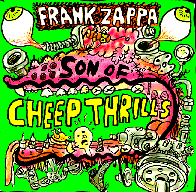

Заппа'zУх!Ой!
русский более или менее регулярный бюллетень для поклонников американского композитора
Frank'а Vincent'а Zappa'ы
Перекур, а не выпуск
:-)))
Увы! Хотя добрый Минздрав и предупреждал о недопустимости остановки в пути, пришлось нам-таки сесть на пенек и съесть пирожок. Намяли, признаться надо, досыта, и с аппетитом и через "не могу", самое время резко встать и с песней в чащу углубиться. То есть приняться за старое, ну, да, об одном и том же писать два, а то и три раза в месяц.
Ну, что ж, подъем!

Кстати, пока мы на травке, на земле валялись, вдыхали ароматы незатейливых зефиров во Вселенной нашего кумира ФВЗ ничего существенного не произошло. Малая медведица Большую не покрыла, и Козерог Альдебарана не заборол. Хотя, конечно, мелкие светлячки небесной ерундистики и проносились, не без этого, садились на нос.Ну, например, связанные по рукам и ногам Zappa Family Trust романтики и прожектеры из Rykodisc выпустили в апреле (или мае?) - не важно, очередную компиляцию уже давно и всеми фанатами заученного, затверженного наизусть материала. Называется Son Of Cheep Thrills. Папаня, если помните, был свой в доску. Ну и сынок, естественно, полное deja vue.
Опять не везет! Впрочем, не всем. Lewis Saul, музыковед и сетевой энтузиаст (некогда содержавший буквально академию наук, а не сайт - The Frank Zappa Musical Resource Institute, ныне тоже временно, надеюсь, перекуривающий в офф-лайне) сумел-таки взять интервью у автора многих (We're only in it..., Uncle Meat, Crusing..., Ahead Of..., etc, etc ) примечательных пластиночных обложек FZ (кстати, и нынешняя компиляция в том же списке) Кальвина Шенкла.
Могу сознаться, что обставил старика. То есть, молодец, пока я письмами из далека бомбардировал Кальвина, а он дежурно отстреливался - "давай next week, next month, next year" - Льюис сам из Аризоны прикатил в близлежащий (это если с нашей горки смотреть) Массачусетс и взял артиста теплым.
А что? Человека с диктофоном, покрытым дорожной пылью законы кап. гостеприимства за дверь не позволяют выставлять, это вам не электронную корреспонденцию стирать. Гуманизма, десять заповедей, фройндшафт.
И замечательно, теперь не только я, а все желающие (демократия на марше!) будут знать, как Кальвин впервые познакомился с Заппой и его музыкой.
| The tape started as Calvin was talking about how he met Zappa. | Пленка начинается с рассказа Кальвина о том, как он впервые встретил Заппу [речь идет о легкомысленном trip'e юного Кальвина в LA] |
| CS: I used to see him all the time hanging out at Canter's and Fred C. Dobb's...But then, I ran into him a couple of times in the oddest ways. One time, I went with a friend to someone's house... Frank was sitting there in the living room. I knew who he was, 'cause I'd seen him around town. I hadn't met him or anything. I just saw him and said, hi, whatever; and then another time...I was hitch-hiking down Sunset Boulevard and I got a ride with a car full of chicks and they said, "we're going to a session, do you want to come along?" I said, "sure, why not?" I didn't even know what they were talking about! It sounded like fun, and why not go along with a carload of chicks? We wound up at one of the Freak Out sessions, I think it was "Help, I'm a Rock"--or "Son of Monster Magnet"--I'm not sure... | КШ: Я видел его регулярно среди публики в Canter's и Fred C. Dobb's ... Но была пара и весьма необычных пересечений. Однажды, с моим приятелем мы поехали к кому-то в гости... В гостиной сидел Фрэнк. Я знал, кто он такой, ну потому, что я его видел тут и там. Мы никогда не общались, просто знакомое лицо, и поэтому я просто сказал ему, что вроде "привет". Позже я как-то стоял и ловил попутку на Sunset Boulevard и меня взяли в машину полную телок, они мне стали говорить "мы едем на session, хочешь с нами?" И я ответил "конечно, почему нет". Что-то определенно занятное намечалось: да и, вообще, почему бы и не прокатиться в машине полной телок? Закончилось все это в студии, где записывался Freak Out. Я думаю, это был "Help, I'm a Rock" или "Son of Monster Magnet"..., впрочем, не уверен... |
| LS: It was late at night? | ЛС: Это было поздно ночью? |
| CS: It was late at night. There were lots of people there and they were screaming and chanting and Vito and Carl Franzoni and, you know, the whole Hollywood freak scene--all these people were there... | КШ: Это было поздно ночью. Там было очень много народу и все чего-то кричали, скандировали... и Vito, и Carl Franzoni, и, ну, короче, вся Голливудская пижонская компашка, вся эта публика была там... |
| LS: Sounds like "Monster Magnet," but I guess it could have been... | ЛС: Похоже на "Monster Magnet", хотя мог быть и... |
| CS: I don't know--I couldn't tell you... from either or both... | КШ: Не знаю... Не могу сказать... Или это, или все сразу ... |
| LS: And did you make some vocal contributions? | ЛС: И вы внесли свою вокальную лепту? |
| CS: I don't think so--I don't remember much of anything about it, except just kind of enjoying the atmosphere of the whole thing, you know--then--okay, I guess around May or June, early June, '66, right? | КШ: Не думаю... да и, вообще, мало, что помню обо всем этом, только удовольствие от самой атмосферы происходящего. Понимаете? И отлично. Скорее всего это был май или июнь, начало июня '66, так? |
| дальше... | |
Кстати, в другом, более формальном интервью, которое Кальвин дал журналу SECONDS в 1995, он объяснил и почему в конце концов прибился к Заппе, и в чем общность художественных методов, его и Фрэнка, объединяющий фактор указал - оба, в кислотном цветнике шестидесятых, предпочитали творить на трезвую голову.
| SECONDS: Frank's early work has that intense Psychedelic thing happening but he's always been such a militant anti-drug guy. Was he making a statement about the Psychedelic thing? | СЕКУНДЫ: Во всех ранних работах Фрэнка явственно ощущается психоделический душок, и в то же время он всегда был таким воинственным анти-нарком. Как-то он комментировал психоделию? |
| SCHENKEL: Definitely. I didn't use drugs either. I experimented with them a little bit when I was younger but I was never involved in the drug scene, which is one of the reasons that I did like working with Frank. I found it to be a problem with other people I might have started working with ... it was a big problem to deal with the drug scene. | ШЕНКЕЛ: Конечно. Я ведь тоже не употребляю наркотиков. Я немного экспериментировал с ними, когда был помоложе, но никогда не был непосредственно в самом нарко-кругу, кстати, этим объясняется и то, почему мне так нравилось работать с Фрэнком. В конце концов именно это становилось проблемой, когда я пытался работать с другими людьми... наркоши - всегда проблема. |
| все целиком... | |
Между прочим, весьма забавную историю в связи с химически программируемыми особями и ненавистью, которую испытывал Заппа к особенностям их прихотливого метаболизма поведала в своей в мае (точно в мае! я ведь тоже практически непьющий) вышедшей книге UNDER THE SAME MOON: Life with Frank Zappa, Steve Vai, Bob Harris, And A Community of Other Artistic Souls" знаменитая вокалистка, исполнительница немыслимой партии космической вампирессы Дракмы, звезда альбома Фрэнка "Sleep Dirt" Suzannah (Thana) Harris.
Ее мужа Боба Харрис, доморощенного эскулапа из серии любителей пичкать друзей форшмаком из таежных трав, невинного обладателя сопрано, Заппа уже готов был выгнать из группы во время Tinsel Town Rebellion турне, но, слава Богу, самолично убедился, что смесь, которую после концерта по совету Боба занюхивал страдающий от насморка Ike Wills всего лишь целебный (хоть и блевотного вида) экстракт алоэ. Любопытно не только то, что виртуозы-лабухи ходили под нашим гением, как под завучем, но и то, что кто-то ведь из них же и настучал.
Ну, а сама книжка Танны, при всей незатейливости, конечно, стоит того, чтобы прочитать. Я вот, например, узнал, не только как записывался вокал для Sleep Dirt (это мне и раньше Танна рассказывала), но и то, обладателем каких незауряднейших душевных качеств оказывается является музыкальный секретарь и гитарист Фрэнка Заппа - Stevie Vai.
Джентельмен с голубыми волосами, удовлетворявший согласно легенде прекрасную незнакомку, не только жарким органическим, но и прохладным металлическим
"FZ: ...sometimes people say
That if you fuck somebody, it's a sin.
This may or may not be true.
This boy not only fuck somebody with his organ,
But he also fuck the girl with the guitar
With an umbrella, with a zucchini, with a shoe
With an enema bag
(What else you do?
Vai: A vibrato bar)
FZ: A vibrato bar"
"Church Chat" on YCDTOSA Volume 4
Ну, вот, кажется и все. Новости исчерпаны, ах, впрочем, нет. Забыл статью в январском номере журнала "New Yorker" с подзаголовком "Gail Zappa began writing checks to the Democrats because Bill Clinton reminded her of her husband." Эта трогательное сходство добавило за последние пять лет в предвыборные фонды демократов что-то около трехсот тысяч у.е. из кошелка ZFT. Теперь Гэйл дружит с Гором, обедает в Белом доме и с обитателями оного фотографируется на память. Кто бы ее просветил, что и среди фанатов есть отменные вафлеры с навыками игры на саксофоне (при империалах и без), может быть, она бы пусть не деньги, так пару записей с концертов 1976 пустила наконец в оборот по этому замечательному поводу.
До встречи, однако:-)))
Искренне Ваш, Владимир Советов
http://www.arf.ru/
| Домой | Заппа'zУх!Ой! | Поиск | Хозяин |